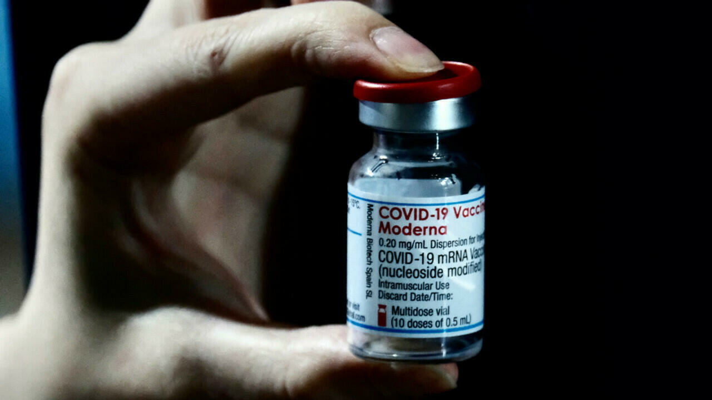
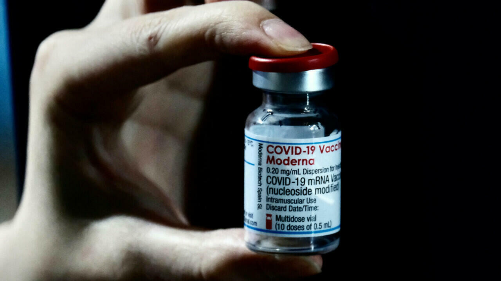
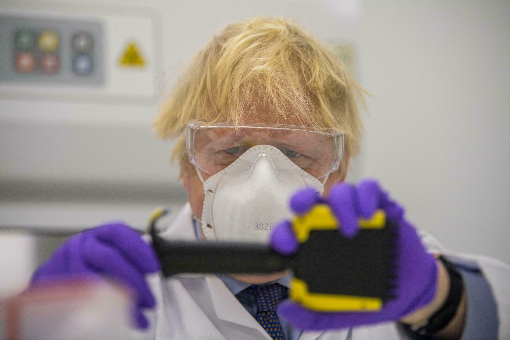
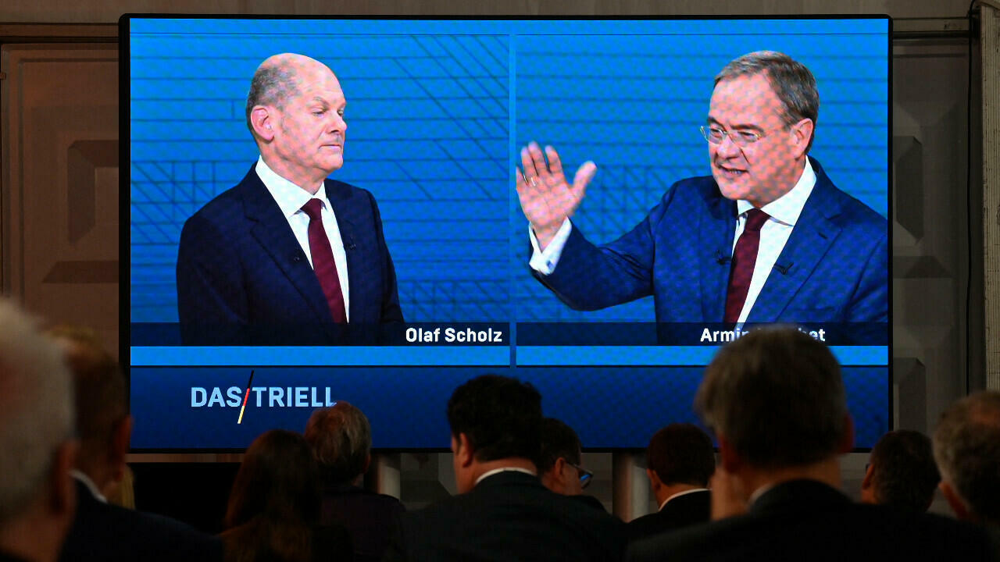
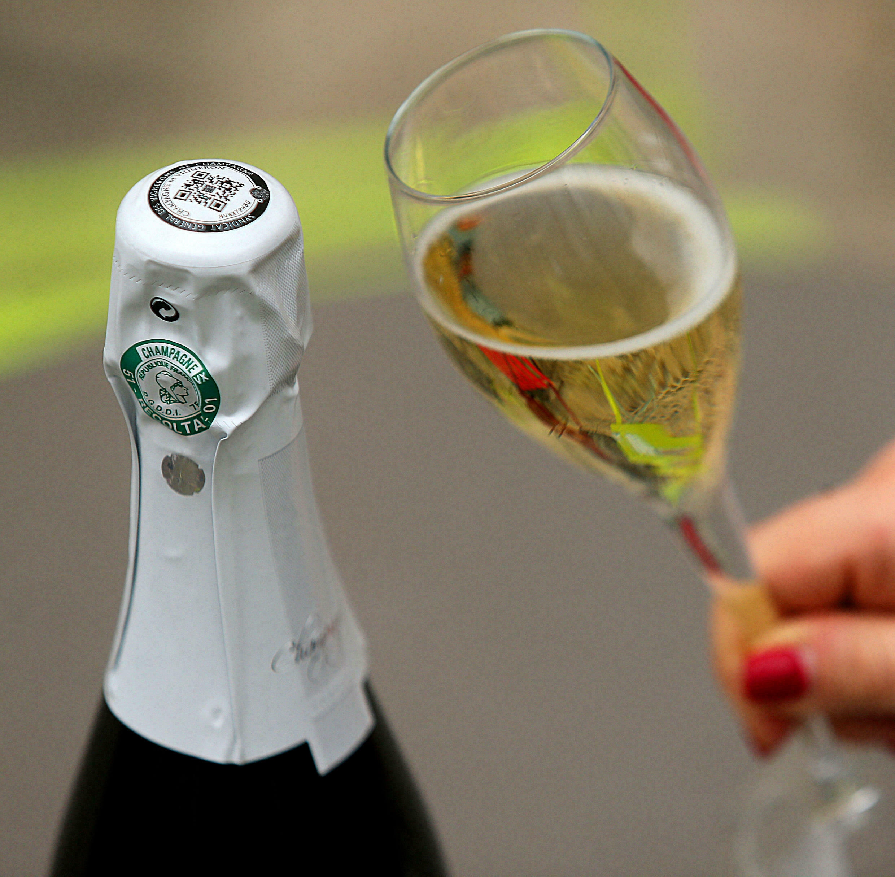
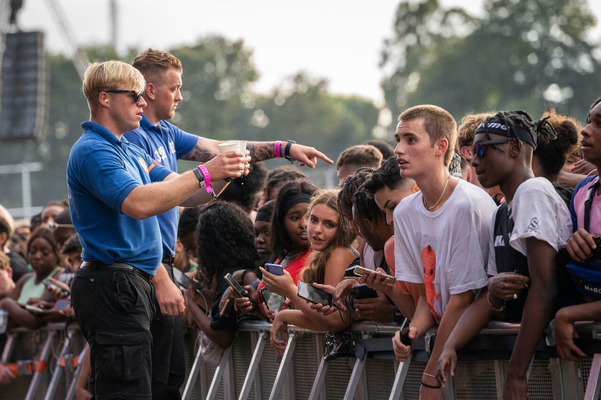
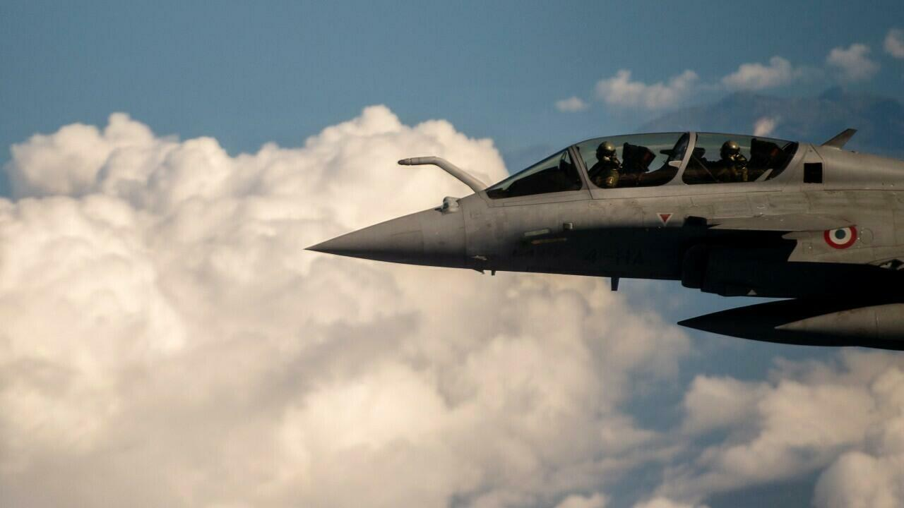
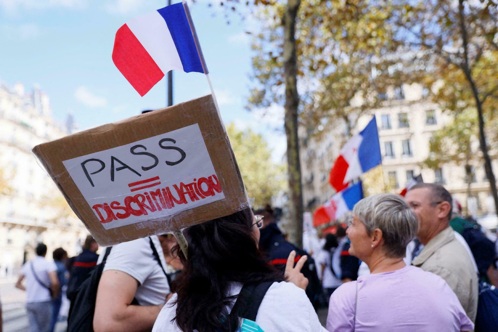

True or false: Countering the claims of Covid-19 vaccine sceptics
url':'https:\/\/s.france24.com\/media\/display\/7c49c41e-ddcd-11eb-ab04-005056bf30b7\/','filename':'000_9BP3Q8.jpg','ratio':'p:16x9','displayFormat':'16x9'}' src='https://s.france24.com/media/display/7c49c41e-ddcd-11eb-ab04-005056bf30b7/w:980/p:16x9/000_9BP3Q8.webp'>

Posted On: 2021-08-07T18:03:00







Content Date: 2021-08-07
Download Date: 2021-09-16
Document ID: L0C04G7ZI